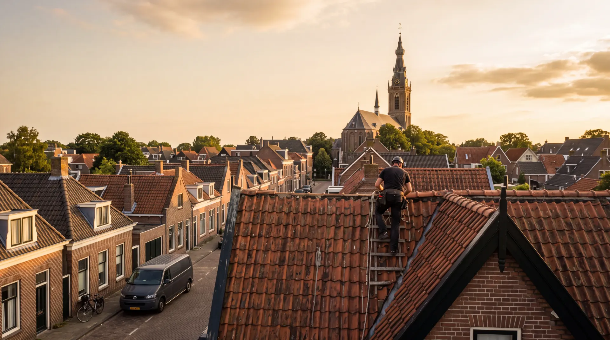
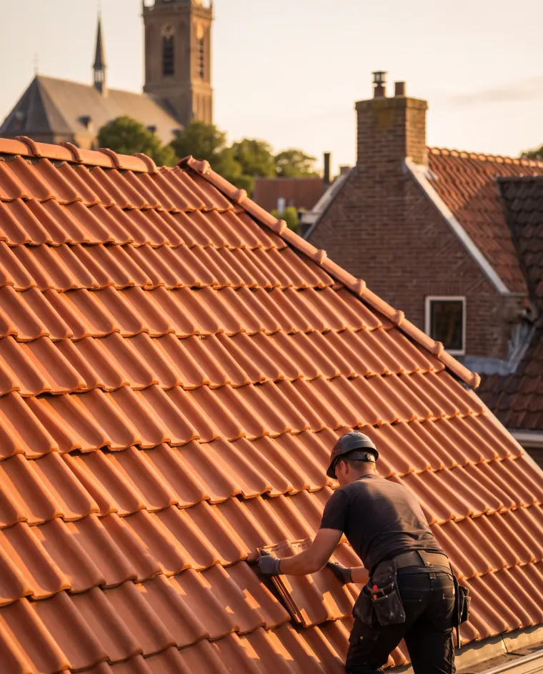
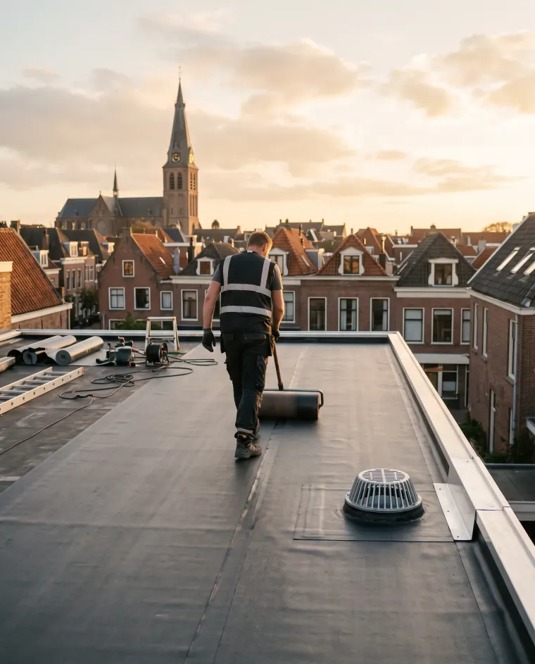

Dakreparatie
Lekkage of stormschade? Wij zijn er snel bij en herstellen het vakkundig, met garantie.
Fictief voorbeeldbedrijf, gebouwd door Belvanger om te laten zien wat mogelijk is. Zelf zo'n website laten bouwen →

Erkend dakdekker · regio Amsterdam
Van een acute lekkage tot een compleet nieuw dak. Veilig, netjes, en met tien jaar garantie op ons werk.
Waar wij goed in zijn
Geen onderaannemers, geen doorverwijzen. Wij bekijken, adviseren eerlijk en voeren het zelf vakkundig uit.
Lekkage of stormschade? Wij zijn er snel bij en herstellen het vakkundig, met garantie.
Bitumen, EPDM of pannen. Wij adviseren wat past bij uw dak en leggen het geheel vakkundig aan.
Minder energieverlies, een warmer huis en een lagere rekening, met subsidiemogelijkheden.
Reiniging, reparatie of vervanging, zodat regenwater altijd goed wegloopt.
Een goed dak zie je niet.
Dat is precies het punt.
Familiebedrijf sinds 1998 · vast team, geen onderaannemers
Ons werk
Straks staan hier de echte foto's van úw projecten. Zo laat u nieuwe klanten precies zien wat ze van u kunnen verwachten.

Nieuw pannendak · Amsterdam-West
Plat dak vernieuwd · HaarlemOver ons
Bakker Dakwerken bestaat al meer dan 25 jaar en werkt met een vast team van ervaren dakdekkers. Wij adviseren altijd eerlijk: soms is een reparatie genoeg, soms is vervangen verstandiger. Dat bepalen we samen met u, met een duidelijke prijs vooraf.
Bel voor een gratis inspectie, of vraag een vrijblijvende offerte aan. Wij reageren doorgaans binnen een paar uur.
020 - 894 33 12Ma t/m za bereikbaar · spoed? Altijd bellen.